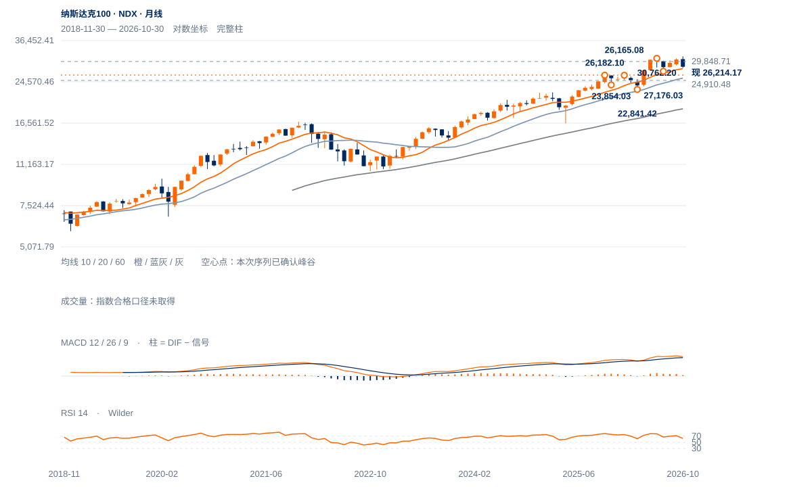

权重修复受压
近期偏向26606低谷再测试，27176回收是第一层修复。
近期偏向26606低谷再测试，27176回收是第一层修复。
未来2—6周维持“权重修复受压”的波段基准。原28829.66连续两日标准不改。26606原日收结构失效条件保留。周线转折还需较高/较低同级拐点及完整收盘跟进；本周仍在进行中，不提前计周级确认。
未来1—3个月属于中期受损后的重建，26606守住及较高周谷出现才提高恢复判断；持续周收低于26606后关注25478附近长期均衡。

展开图表 ↗主要大谷尚未完全破坏，但7月27176低区已遭下破。权重内部结构分裂，不能用苹果仍强替代整个指数的确认。
27001.79低于27176，前次对200日线的回收未能保持；28829.66原修复条件仍未满足。
11-13收27,943.74（-1.22%）；11-16收27,197.15（-2.67%）；11-17收27,001.79（-0.72%）。
RSI14 36.34；ATR14 674.29；无合格量口径。指数不计算OBV或以七股上涨家数替代全市场宽度。
2026-09-22 高30,770.63，确认日2026-09-29；2026-10-06 高31,361.37，确认日2026-10-13；2026-11-05 低26,606.43，确认日2026-11-12
原28829.66连续两日标准不改。
26606原日收结构失效条件保留。
26606尚未再次失守，权重科技并非全部同步破坏；若27176回收后延伸至28830并保持，当前弱修复需要升级。
完整周线截至2026-11-13，完整月线截至2026-10-30；11月与本周尚未收完。长期窗口以近5—8年为主。